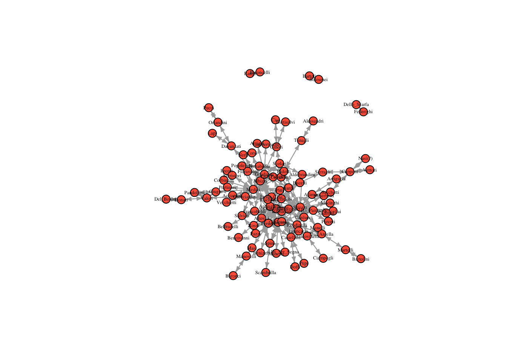
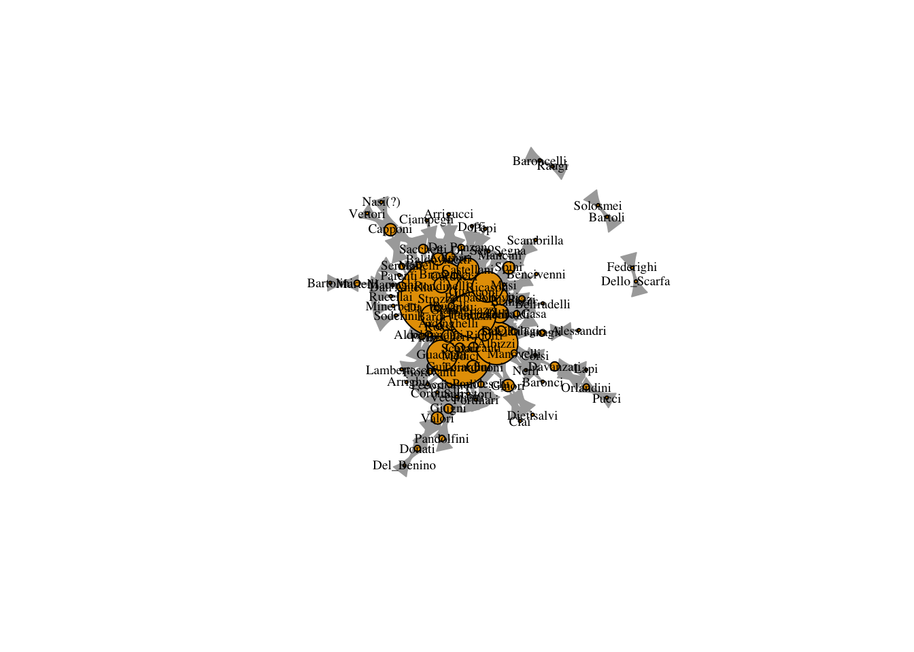
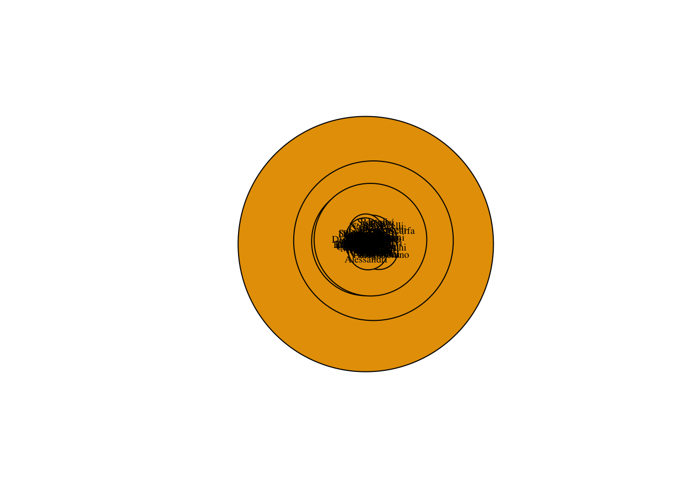
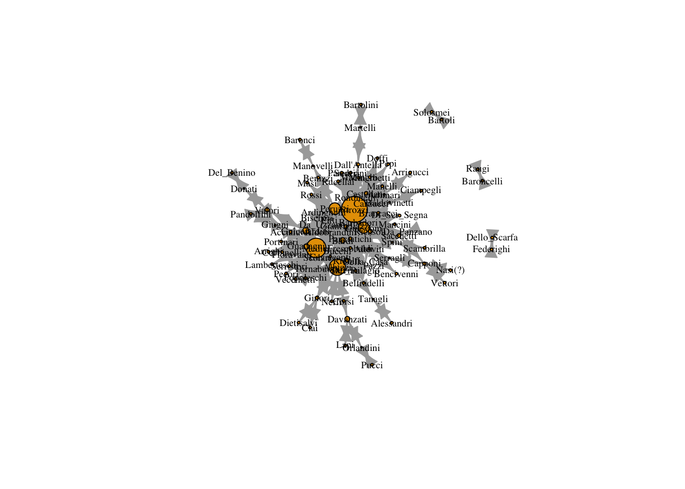
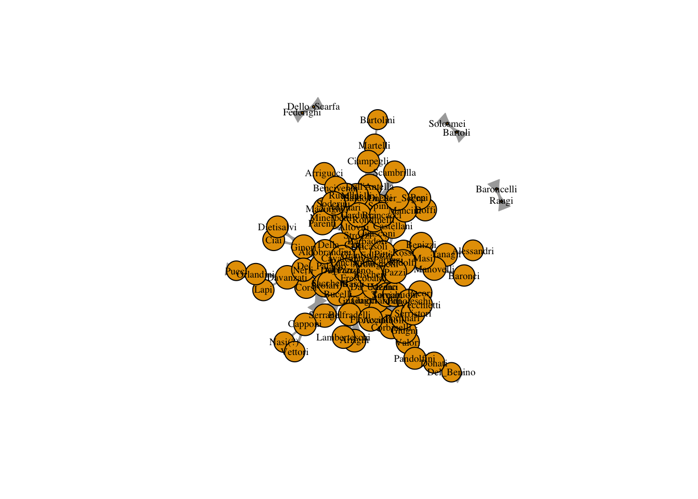
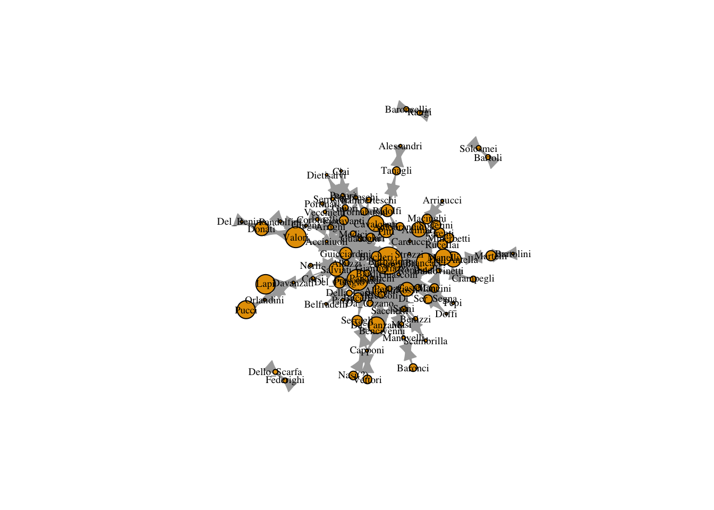
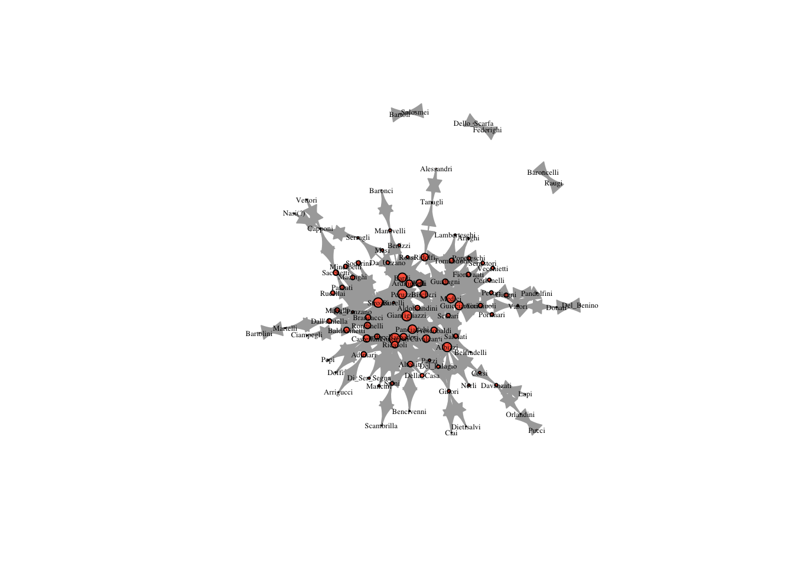
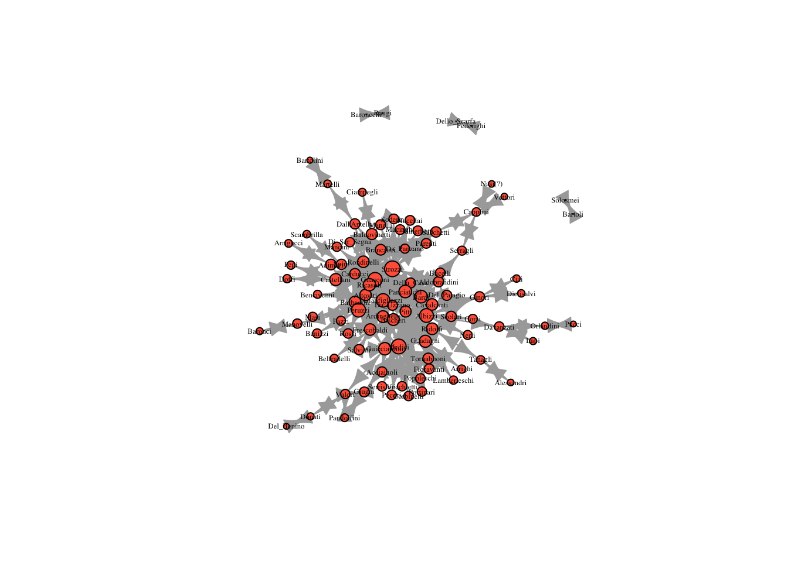

12 Centrality
In this tutorial, we look at measures of network centrality, which we use to identify structurally important actors. We also discuss possible ideas for identifying important edges.
Centrality originally referred to how central actors are in a network’s structure. It has become abstracted as a term from its topological origins and now refers very generally to how important actors are to a network. Topological centrality has a clear definition, but many operationalizations. Network “importance” on the other hand has many definitions and many operationalizations. We will explore the possible meanings and operationalizations of centrality here. There are four well-known centrality measures: degree, betweenness, closeness and eigenvector - each with its own strengths and weaknesses. The main point we want to make is that the analytical usefulness of each depends heavily on the context of the network, the type of relation being analyzed and the underlying network morphology. We don’t want to leave you with the impression that one is better than another - only that one might serve your research goals better than another.
Every node-level measure has its graph-level analogue. Centralization measures the extent to which the ties of a given network are concentrated on a single actor or group of actors. We can also look at the degree distribution. It is a simple histogram of degree, which tells you whether the network is highly unequal or not.
12.0.1 Loading the example network
As always, we need to load igraph. We will load in tidyverse too in case we need to do some data munging or plotting.
library(igraph)
library(tidyverse)## ── Attaching packages ─────────────────────────────────────── tidyverse 1.3.1 ──## ✓ tibble 3.1.3 ✓ dplyr 1.0.7
## ✓ tidyr 1.1.3 ✓ stringr 1.4.0
## ✓ readr 2.0.0 ✓ forcats 0.5.1
## ✓ purrr 0.3.4## ── Conflicts ────────────────────────────────────────── tidyverse_conflicts() ──
## x dplyr::as_data_frame() masks tibble::as_data_frame(), igraph::as_data_frame()
## x purrr::compose() masks igraph::compose()
## x tidyr::crossing() masks igraph::crossing()
## x dplyr::filter() masks stats::filter()
## x dplyr::groups() masks igraph::groups()
## x dplyr::lag() masks stats::lag()
## x purrr::simplify() masks igraph::simplify()library(reshape2)We will use John Padgett’s Florentine Families dataset. It is part of a famous historical datset about the relationships of prominent Florentine families in 15th century Italy. The historical puzzle is how the Medici, an upstart family, managed to accumulate political power during this period. Padgett’s goal was to explain their rise.
He looked at many relations. On the github, we have access to marriage, credit, and business partnership ties, but we will focus on marriage for now. Marriage was a tool in diplomacy, central to political alliances. A tie is drawn between families if the daughter of one family was sent to marry the son of another.
Ron Breiger, who analyzed these data in a famous paper on local role analysis, has argued these edges should be directed, tracing where daughters were sent or where finances flowed.
As always, we first load and prepare the dataset. We will do so directly from GitHub again.
# prepare the marriage adjacency matrix
florentine_edj <- read.csv("https://raw.githubusercontent.com/mahoffman/stanford_networks/main/data/florentine_marriage_edgelist.csv")
florentine_edj <- florentine_edj[,2:3]
# prepare the attributes file
florentine_attributes <- read.csv("https://raw.githubusercontent.com/mahoffman/stanford_networks/main/data/florentine_attributes.csv")
# graph the marriage network
marriageNet <- graph.edgelist(as.matrix(florentine_edj), directed = T)
V(marriageNet)$Wealth <- florentine_attributes$Gwealth[match(V(marriageNet)$name, florentine_attributes$Family)]
# Gross wealth (Florins), for 87 (92) families
# simple mean imputation of wealth (alternatively, we might think that those with NA were too poor to show up in historical records?)
V(marriageNet)$Wealth <- ifelse(is.na(V(marriageNet)$Wealth), mean(V(marriageNet)$Wealth, na.rm = T), V(marriageNet)$Wealth)
# Number of Priors, The Priorate (or city council), first created in 1282, was Florence's governing body. Count of how many seats a family had on that city council from 1282-1344
# measure of the aggregate political influence of the family over a long period of time
V(marriageNet)$Priorates <- florentine_attributes$Npriors[match(V(marriageNet)$name, florentine_attributes$Family)]Let’s see how it looks.
plot(marriageNet, vertex.size = 8, vertex.label.cex = .4, vertex.label.color = "black", vertex.color = "tomato", edge.arrow.size = 0.4)
Based on this plot, which family do you expect is most central?
12.0.2 Degree Centrality
The simplest measure of centrality is degree centrality. It counts how many edges each node has - the most degree central actor is the one with the most ties.
Note: In a directed network, you will need to specify if in or out ties should be counted. These will be referred to as in or out degree respectively. If both are counted, then it is just called degree
Degree centrality is calculated using the degree function in R. It returns how many edges each node has.
degree(marriageNet) ## Acciaiuoli Guicciardini Medici Adimari Arrigucci
## 4 14 40 6 2
## Barbadori Strozzi Albizzi Altoviti Della_Casa
## 14 50 28 12 4
## Corsi Davanzati Frescobaldi Ginori Guadagni
## 2 6 12 8 20
## Guasconi Nerli Del_Palagio Panciatichi Scolari
## 24 2 4 14 6
## Aldobrandini Alessandri Tanagli Bencivenni Gianfigliazzi
## 4 2 4 2 20
## Spini Dall'Antella Martelli Rondinelli Ardinghelli
## 8 6 4 10 10
## Peruzzi Rossi Arrighi Baldovinetti Ciampegli
## 30 4 2 8 2
## Manelli Carducci Castellani Ricasoli Bardi
## 4 4 14 20 14
## Bucelli Serragli Da_Uzzano Baroncelli Raugi
## 4 4 4 2 2
## Baronci Manovelli Bartoli Solosmei Bartolini
## 2 4 2 2 2
## Belfradelli Del_Benino Donati Benizzi Bischeri
## 2 2 4 2 8
## Brancacci Capponi Nasi(?) Sacchetti Vettori
## 4 8 2 6 2
## Doffi Pepi Cavalcanti Ciai Corbinelli
## 2 2 6 2 2
## Lapi Orlandini Dietisalvi Valori Federighi
## 2 4 2 8 2
## Dello_Scarfa Fioravanti Salviati Giugni Pandolfini
## 2 4 6 6 4
## Lamberteschi Tornabuoni Mancini Di_Ser_Segna Macinghi
## 2 8 2 2 2
## Masi Pecori Pitti Popoleschi Portinari
## 2 2 4 4 2
## Ridolfi Serristori Vecchietti Minerbetti Pucci
## 8 2 2 2 2
## Da_Panzano Parenti Pazzi Rucellai Scambrilla
## 4 2 4 2 2
## Soderini
## 2Who is the most degree central?
We can assign the output to a variable in the network and size the nodes according to degree.
V(marriageNet)$degree <- degree(marriageNet) # assignment
plot(marriageNet, vertex.label.cex = .6, vertex.label.color = "black", vertex.size = V(marriageNet)$degree, vertex.label.cex = .2) # sized by degree
The problem is that the degree values are a little small to plot well. We can use a scalar to increase the value of the degree but maintain the ratio.
plot(marriageNet,
vertex.label.cex = .6,
vertex.label.color = "black",
vertex.size = V(marriageNet)$degree*3)12.0.3 Betweenness Centrality
Betweenness centrality captures which nodes are important in the flow of the network. It makes use of the shortest paths in the network. A path is a series of adjacent nodes. For any two nodes we can find the shortest path between them, that is, the path with the least amount of total steps (or edges). If a node C is on a shortest path between A and B, then it means C is important to the efficient flow of goods between A and B. Without C, flows would have to take a longer route to get from A to B.
Thus, betweenness effectively counts how many shortest paths each node is on. The higher a node’s betweenness, the more important they are for the efficient flow of goods in a network.
In igraph, betweenness() computes betweenness in the network
betweenness(marriageNet, directed = FALSE)## Acciaiuoli Guicciardini Medici Adimari Arrigucci
## 0.000000 327.850305 1029.609288 93.009524 0.000000
## Barbadori Strozzi Albizzi Altoviti Della_Casa
## 162.697344 1369.979110 856.436111 125.620147 11.577398
## Corsi Davanzati Frescobaldi Ginori Guadagni
## 0.000000 260.000000 145.532681 180.571429 277.059921
## Guasconi Nerli Del_Palagio Panciatichi Scolari
## 583.679251 0.000000 0.000000 167.994891 19.801010
## Aldobrandini Alessandri Tanagli Bencivenni Gianfigliazzi
## 23.351190 0.000000 88.000000 0.000000 187.915043
## Spini Dall'Antella Martelli Rondinelli Ardinghelli
## 89.500000 174.000000 88.000000 43.186597 58.278211
## Peruzzi Rossi Arrighi Baldovinetti Ciampegli
## 604.369691 0.000000 0.000000 95.613889 0.000000
## Manelli Carducci Castellani Ricasoli Bardi
## 0.000000 5.009524 194.199423 205.097092 280.248232
## Bucelli Serragli Da_Uzzano Baroncelli Raugi
## 1.066667 81.000000 3.666667 0.000000 0.000000
## Baronci Manovelli Bartoli Solosmei Bartolini
## 0.000000 88.000000 0.000000 0.000000 0.000000
## Belfradelli Del_Benino Donati Benizzi Bischeri
## 0.000000 0.000000 88.000000 0.000000 63.995238
## Brancacci Capponi Nasi(?) Sacchetti Vettori
## 0.000000 177.000000 0.000000 197.651515 0.000000
## Doffi Pepi Cavalcanti Ciai Corbinelli
## 0.000000 0.000000 125.467749 0.000000 0.000000
## Lapi Orlandini Dietisalvi Valori Federighi
## 0.000000 88.000000 0.000000 202.285859 0.000000
## Dello_Scarfa Fioravanti Salviati Giugni Pandolfini
## 0.000000 5.951190 35.571429 96.664141 0.000000
## Lamberteschi Tornabuoni Mancini Di_Ser_Segna Macinghi
## 0.000000 23.831746 0.000000 0.000000 0.000000
## Masi Pecori Pitti Popoleschi Portinari
## 0.000000 0.000000 19.610606 0.000000 0.000000
## Ridolfi Serristori Vecchietti Minerbetti Pucci
## 213.727670 0.000000 0.000000 0.000000 0.000000
## Da_Panzano Parenti Pazzi Rucellai Scambrilla
## 16.961111 0.000000 4.361111 0.000000 0.000000
## Soderini
## 0.000000We can again assign the output of betweenness() to a variable in the network and size the nodes according to it.
V(marriageNet)$betweenness <- betweenness(marriageNet, directed = F) # assignment
plot(marriageNet,
vertex.label.cex = .6,
vertex.label.color = "black",
vertex.size = V(marriageNet)$betweenness) # sized by betweenness
Betweenness centrality can be very large. It is often helpful to normalize it by dividing by the maximum and multiplying by some scalar when plotting.
plot(marriageNet,
vertex.label.cex = .6,
vertex.label.color = "black",
vertex.size = V(marriageNet)$betweenness/max(V(marriageNet)$betweenness) * 20)
12.0.4 Closeness Centrality
With closeness centrality we again make use of the shortest paths between nodes. We measure the distance between two nodes as the length of the shortest path between them. Farness, for a given node, is the average distance from that node to all other nodes. Closeness is then the reciprocal of farness (1/farness).
closeness(marriageNet)## Warning in closeness(marriageNet): At centrality.c:2784 :closeness centrality is
## not well-defined for disconnected graphs## Acciaiuoli Guicciardini Medici Adimari Arrigucci
## 0.0011723329 0.0012468828 0.0012836970 0.0011961722 0.0010822511
## Barbadori Strozzi Albizzi Altoviti Della_Casa
## 0.0012210012 0.0012970169 0.0012658228 0.0012165450 0.0011792453
## Corsi Davanzati Frescobaldi Ginori Guadagni
## 0.0011389522 0.0011467890 0.0012180268 0.0011737089 0.0012254902
## Guasconi Nerli Del_Palagio Panciatichi Scolari
## 0.0012903226 0.0011389522 0.0011834320 0.0012562814 0.0011834320
## Aldobrandini Alessandri Tanagli Bencivenni Gianfigliazzi
## 0.0011834320 0.0010141988 0.0011135857 0.0010989011 0.0012690355
## Spini Dall'Antella Martelli Rondinelli Ardinghelli
## 0.0011792453 0.0011709602 0.0010638298 0.0012195122 0.0012330456
## Peruzzi Rossi Arrighi Baldovinetti Ciampegli
## 0.0012722646 0.0011534025 0.0011061947 0.0012091898 0.0010928962
## Manelli Carducci Castellani Ricasoli Bardi
## 0.0011668611 0.0011933174 0.0012254902 0.0012269939 0.0012531328
## Bucelli Serragli Da_Uzzano Baroncelli Raugi
## 0.0011627907 0.0011389522 0.0011737089 0.0001108033 0.0001108033
## Baronci Manovelli Bartoli Solosmei Bartolini
## 0.0010416667 0.0011467890 0.0001108033 0.0001108033 0.0009727626
## Belfradelli Del_Benino Donati Benizzi Bischeri
## 0.0011001100 0.0009469697 0.0010330579 0.0011441648 0.0012360939
## Brancacci Capponi Nasi(?) Sacchetti Vettori
## 0.0012048193 0.0010976948 0.0010010010 0.0011806375 0.0010010010
## Doffi Pepi Cavalcanti Ciai Corbinelli
## 0.0011061947 0.0011061947 0.0012285012 0.0010638298 0.0011534025
## Lapi Orlandini Dietisalvi Valori Federighi
## 0.0010416667 0.0010438413 0.0010638298 0.0011337868 0.0001108033
## Dello_Scarfa Fioravanti Salviati Giugni Pandolfini
## 0.0001108033 0.0011682243 0.0011723329 0.0011641444 0.0010718114
## Lamberteschi Tornabuoni Mancini Di_Ser_Segna Macinghi
## 0.0011061947 0.0011890606 0.0011587486 0.0011587486 0.0011641444
## Masi Pecori Pitti Popoleschi Portinari
## 0.0011441648 0.0011534025 0.0012195122 0.0011587486 0.0011534025
## Ridolfi Serristori Vecchietti Minerbetti Pucci
## 0.0012315271 0.0011534025 0.0011534025 0.0011641444 0.0009560229
## Da_Panzano Parenti Pazzi Rucellai Scambrilla
## 0.0011389522 0.0011641444 0.0011337868 0.0011641444 0.0010683761
## Soderini
## 0.0011641444We assign it to a node variable and plot the network, adjusting node size by closeness.
V(marriageNet)$closeness <- closeness(marriageNet)## Warning in closeness(marriageNet): At centrality.c:2784 :closeness centrality is
## not well-defined for disconnected graphsplot(marriageNet,
vertex.label.cex = .6,
vertex.label.color = "black",
vertex.size = V(marriageNet)$closeness/max(V(marriageNet)$closeness) * 20)
12.1 Eigenvector Centrality
Degree centrality only takes into account the number of edges for each node, but it leaves out information about ego’s alters.
However, we might think that power comes from being tied to powerful people. If A and B have the same degree centrality, but A is tied to all high degree people and B is tied to all low degree people, then intuitively we want to see A with a higher score than B.
Eigenvector centrality takes into account alters’ power. It is calculated a little bit differently in igraph. It produces a list object and we need to extract only the vector of centrality values.
evcent(marriageNet)$vector## Acciaiuoli Guicciardini Medici Adimari Arrigucci
## 1.399699e-01 3.830752e-01 6.707160e-01 1.831812e-01 2.433106e-02
## Barbadori Strozzi Albizzi Altoviti Della_Casa
## 3.547849e-01 1.000000e+00 5.323660e-01 3.372469e-01 1.414314e-01
## Corsi Davanzati Frescobaldi Ginori Guadagni
## 7.071156e-02 7.332195e-02 3.436670e-01 1.057862e-01 3.460880e-01
## Guasconi Nerli Del_Palagio Panciatichi Scolari
## 6.811084e-01 7.071156e-02 1.383317e-01 5.090917e-01 1.367356e-01
## Aldobrandini Alessandri Tanagli Bencivenni Gianfigliazzi
## 1.509870e-01 4.503879e-03 3.390835e-02 4.479485e-02 7.162939e-01
## Spini Dall'Antella Martelli Rondinelli Ardinghelli
## 2.096823e-01 1.893404e-01 2.560082e-02 3.998861e-01 4.000982e-01
## Peruzzi Rossi Arrighi Baldovinetti Ciampegli
## 7.915554e-01 1.582815e-01 4.596917e-02 2.497482e-01 3.317283e-02
## Manelli Carducci Castellani Ricasoli Bardi
## 1.659979e-01 1.799494e-01 4.238792e-01 5.324287e-01 4.080706e-01
## Bucelli Serragli Da_Uzzano Baroncelli Raugi
## 1.218222e-01 5.798025e-02 1.593404e-01 1.757355e-17 2.919646e-18
## Baronci Manovelli Bartoli Solosmei Bartolini
## 1.421582e-02 1.070266e-01 4.206220e-18 4.255001e-19 3.400431e-03
## Belfradelli Del_Benino Donati Benizzi Bischeri
## 4.564759e-02 1.231075e-03 9.268390e-03 1.051384e-01 3.348147e-01
## Brancacci Capponi Nasi(?) Sacchetti Vettori
## 2.232934e-01 2.844521e-02 3.778238e-03 1.486187e-01 3.778238e-03
## Doffi Pepi Cavalcanti Ciai Corbinelli
## 5.630179e-02 5.630179e-02 2.359640e-01 1.405106e-02 8.908790e-02
## Lapi Orlandini Dietisalvi Valori Federighi
## 9.738994e-03 9.913900e-03 1.405106e-02 6.854784e-02 1.875726e-17
## Dello_Scarfa Fioravanti Salviati Giugni Pandolfini
## 8.288370e-18 1.350571e-01 1.467173e-01 1.011873e-01 2.254509e-02
## Lamberteschi Tornabuoni Mancini Di_Ser_Segna Macinghi
## 4.596917e-02 1.834366e-01 9.046827e-02 9.046827e-02 1.328251e-01
## Masi Pecori Pitti Popoleschi Portinari
## 1.051384e-01 8.908790e-02 2.219130e-01 1.134529e-01 8.908790e-02
## Ridolfi Serristori Vecchietti Minerbetti Pucci
## 2.507818e-01 8.908790e-02 8.908790e-02 1.328251e-01 1.316815e-03
## Da_Panzano Parenti Pazzi Rucellai Scambrilla
## 9.046017e-02 1.328251e-01 9.020762e-02 1.328251e-01 2.785107e-02
## Soderini
## 1.328251e-01Then we can assign that vector to our network and plot it.
V(marriageNet)$eigenvector <- evcent(marriageNet)$vector
plot(marriageNet,
vertex.label.cex = .6,
vertex.label.color = "black",
vertex.size = V(marriageNet)$eigenvector/max(V(marriageNet)$eigenvector) * 20)
12.2 Bonacich Centrality
Perhaps marrying your daughters off to weaker families is a good way to ensure their loyalty? We could evaluate this using bonacich centrality. From igraph: “Interpretively, the Bonacich power measure corresponds to the notion that the power of a vertex is recursively defined by the sum of the power of its alters. The nature of the recursion involved is then controlled by the power exponent: positive values imply that vertices become more powerful as their alters become more powerful (as occurs in cooperative relations), while negative values imply that vertices become more powerful only as their alters become weaker (as occurs in competitive or antagonistic relations).”
V(marriageNet)$bonacich <- power_centrality(marriageNet, exponent = -2, rescale = T)
V(marriageNet)$bonacich <- ifelse(V(marriageNet)$bonacich < 0, 0, V(marriageNet)$bonacich)
plot(marriageNet,
vertex.label.cex = .6,
vertex.label.color = "black",
vertex.size = V(marriageNet)$bonacich/max(V(marriageNet)$bonacich) * 20)
12.3 Page Rank
Here is Google’s page rank measure. It uses random walks to identify individuals who are commonly encountered along such walks. Those individuals are viewed as central.
V(marriageNet)$page_rank <- page_rank(marriageNet, directed = TRUE)$vector
plot(marriageNet,
vertex.label.cex = .6,
vertex.label.color = "black",
vertex.size = V(marriageNet)$page_rank/max(V(marriageNet)$page_rank) * 20)12.3.1 Measure Correlations
Most of these measures are highly correlated, meaning they don’t necessarily capture unique aspects of pwoer. However, the amount of correlation depends on the network structure. Let’s see how the correlations between centrality measures looks in the Florentine Family network. cor.test(x,y) performs a simple correlation test between two vectors.
# extract all the vertex attributes
all_atts <- lapply(list.vertex.attributes(marriageNet),function(x) get.vertex.attribute(marriageNet,x))
# bind them into a matrix
all_atts <- do.call("cbind", all_atts)
# add column nams
colnames(all_atts) <- list.vertex.attributes(marriageNet)
# drop the family variable
all_atts <- data.frame(all_atts[,2:ncol(all_atts)])
# convert all to numeric
all_atts <- sapply(all_atts, as.numeric)
# produce a correlation matrix
cormat <- cor(all_atts)
# melt it using reshape to function melt() to prepare it for ggplot which requires long form data
melted_cormat <- melt(cormat)
ggplot(data = melted_cormat, aes(x=Var1, y=Var2, fill=value)) +
geom_tile() +
scale_fill_distiller(palette = "Spectral", direction=-2) +
xlab("") +
ylab("")What do we learn?
12.3.2 Centralization and Degree Distributions
To understand the measures further, we can look at their distributions. This will tell us roughly how many nodes have centralities of a given value.
# fitting a degree distribution on the log-log scale
alter_hist = table(degree(marriageNet))
vals = as.numeric(names(alter_hist))
vals = vals[2:length(vals)]
alter_hist = alter_hist[2:length(alter_hist)]
df = data.frame(Vals = log(vals), Hist = log(as.numeric(alter_hist)), stringsAsFactors = F)
# plot log-log degree distribution
plot(Hist ~ Vals, data = df)
# regression line
abline(lm(Hist ~ Vals, data = df))
Do their marriage partners have more marriage partners than they do?
# degrees of your friends
neighbor_degrees <- knn(marriageNet)$knn
degrees <- degree(marriageNet)
mean(neighbor_degrees, na.rm = T)## [1] 18.72979mean(degrees)## [1] 6.541667# plot neighbor degrees vs. ego degress
hist(neighbor_degrees)hist(degrees)We can see that most nodes in the marriage network have low betweenness centrality, and only one node has more than 40 betweenness. Degree distributions tend to be right-skewed; that is, only a few nodes in most networks have most of the ties. Evenly distributed degree is much rarer.
Finally centralization measures the extent to which a network is centered around a single node. The closer a network gets to looking like a star, the higher the centralization score will be.
degcent <- centralization.degree(marriageNet)$centralization
centralization.betweenness(marriageNet)$centralization## [1] 0.2881759centralization.evcent(marriageNet)$centralization## [1] 0.8503616centralization.closeness(marriageNet)$centralization## Warning in centralization.closeness(marriageNet): At
## centrality.c:2784 :closeness centrality is not well-defined for disconnected
## graphs## [1] 0.02030026Can we compare our centralization scores against some baseline? Here is an example with Barabasi-Albert model, which simulates a network in which there is preferential attachment with respect to degree, the amount of which is controlled by the power parameter.
N <- vcount(marriageNet)
degcent <- centralization.degree(marriageNet)$centralization
centralizations = c()
powers <- seq(from = 0, to = 3, by = 0.1)
for(e in powers){
net <- barabasi.game(N, directed = F, power=e)
centralizations <- c(centralizations, centralization.degree(net)$centralization)
}
power_df <- data.frame(Centralization = centralizations, Power = powers)
ggplot(power_df, aes(x = Power, y = Centralization)) +
geom_point() +
geom_hline(yintercept = degcent, linetype="dashed", color = "red") +
theme_bw() ## Reach N
What proportion of nodes can any node reach at N steps?
## Reach N
What proportion of nodes can any node reach at N steps?
reach_n =function(x, n = 2){
r=vector(length=vcount(x))
for (i in 1:vcount(x)){
neighb =neighborhood(x, n, nodes=i)
ni=unlist(neighb)
l=length(ni)
r[i]=(l)/vcount(x)
}
return(r)
}
two_reach = reach_n(marriageNet, 2)
plot(marriageNet, vertex.size = two_reach * 10, vertex.label.cex = .4, vertex.label.color = "black", vertex.color = "tomato")
three_reach = reach_n(marriageNet, 3)
plot(marriageNet, vertex.size = three_reach * 10, vertex.label.cex = .4, vertex.label.color = "black", vertex.color = "tomato")
four_reach = reach_n(marriageNet, 4)
plot(marriageNet, vertex.size = four_reach * 10, vertex.label.cex = .4, vertex.label.color = "black", vertex.color = "tomato")five_reach = reach_n(marriageNet, 5)
plot(marriageNet, vertex.size = five_reach * 10, vertex.label.cex = .4, vertex.label.color = "black", vertex.color = "tomato")12.4 Distance weighted reach
distance_weighted_reach=function(x){
distances=shortest.paths(x) #create matrix of geodesic distances
diag(distances)=1 # replace the diagonal with 1s
weights=1/distances # take the reciprocal of distances
return(apply(weights,1,sum)) # sum for each node (row)
}
dw_reach = distance_weighted_reach(marriageNet)
dw_reach = dw_reach/max(dw_reach)
plot(marriageNet, vertex.size = dw_reach * 10, vertex.label.cex = .4, vertex.label.color = "black", vertex.color = "tomato")